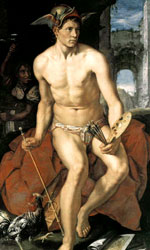

Гермес, в грецькій міфології вісник богів, покровитель подорожніх, провідник душ померлих ("психопомп"), син Зевса і прекрасної німфи гір Майї, дід відважного і Многомудрий Одіссея. Гермеса зазвичай зображують юнаків в капелюсі з загнутими полями, в золотих крилатих сандалях і з золотим магічним жезлом, подарунком Аполлона, прикрашеним двома зміями.
Оскільки виявлення божественної волі іноді відбувається уві сні, то бог з допомогою свого жезла насилав на людей віщі сни. Він - посередник між світом живих і світом мертвих, а спритність і спритність Гермеса, що володіє даром незримо відкривати будь-які узи, роблять його покровителем крутійства і злодійства - недарма його онуком був хитромудрий Одіссей.
Гермес вважається винахідником музичного інструменту - ліри. Крім того, Гермес був веселуном і жартівником і любив влаштовувати розіграші. Це він якось жартома поцупив у Зевса скіпетр, у Посейдона - тризубець, а в Аполлона - лук і золоті стріли. Правда, якщо він і користувався ними, то тільки в благородних цілях.
Ніхто не міг перевершити його в хитрості, винахідливості і лукавстві, тому злодії і шулери вважають його своїм покровителем. Люди шанували його за те, що він подарував їм винайдені кентавром Хироном міри ваги і довжини, числа і абетку і навчив їх грамоті. Його славили як бога - покровителя молодих атлетів. У його честь будувалися стадіони для атлетичних змагань і школи для занять гімнастикою, які називалися гімнасія і прикрашалися скульптурними зображеннями бога.
Відомий міф про любов Іо і Зевса, яка відбулася завдяки Гермесу. Іо, в грецькій міфології дочка аргосского царя Інаха, була коханою Зевса. Бог Зевс, боячись гніву ревнивої Гери, перетворив царівну в білосніжну телицю, але Гера, розгадавши хитрість, зажадала її собі в дар і приставила до неї варта, велетня Аргоса, чиє тіло було поцятковане безліччю очей, причому одночасно спали лише два ока. З волі Зевса і завдяки своїй хитрості Гермес звільнив красуню Іо від жахливого Аргоса і вбив його. Звільнена Іо мандрувала по Греції, Азії та Єгипту, переслідувана оводом, наслав Герой.
Лише в далекому Єгипті вона змогла прийняти свій колишній вигляд і народити сина Епафа, родоначальника багатьох славних героїв: Амфітріона, Геракла, Персея і ін. Під час поневірянь по Кавказу вона зустрілася з Прометеєм, який передбачив велике майбутнє нащадкам Іо і Зевса.
В епоху класичної міфології роль Гермеса переосмислюється. Він перетворюється в покровителя героїв: вручає Персею меч для вбивства горгони Медузи; Одіссею відкриває таємницю чарівної трави, щоб той зміг врятуватися від чар Кирки; охороняє героїв під час мандрівок. Гермес шанувався на Анфестерий - святі пробудження весни і пам'яті померлих. Зевс подарував Гермесу сузір'я Ліра. У римській міфології йому відповідає Меркурій, покровитель ремесел і торгівлі.